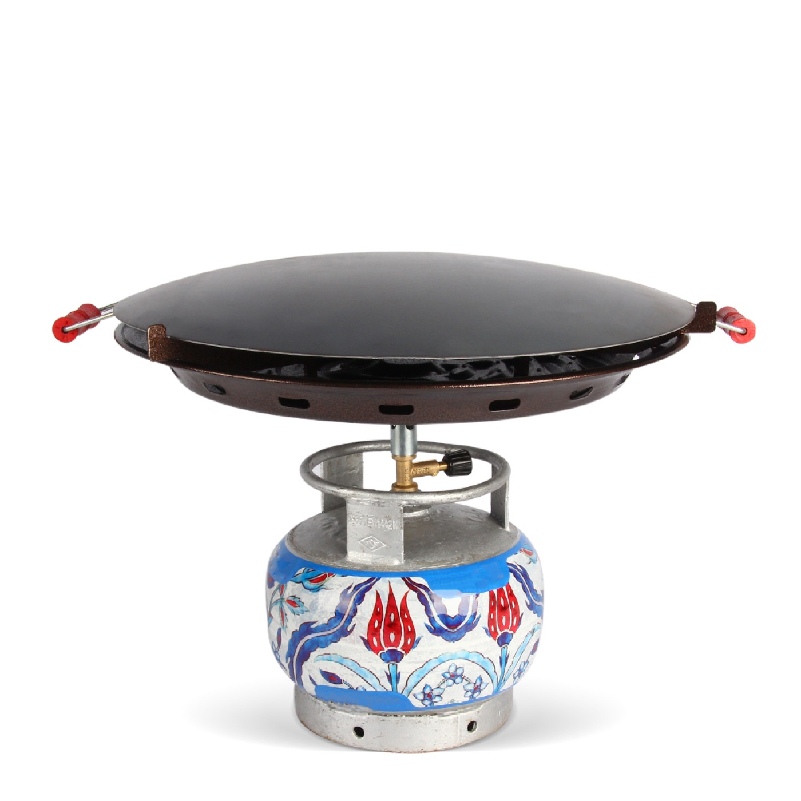

Ocaklar / Atacan Mangal Soba
PORTATİF SAC 45cm
Bu ürün hakkında fiyat, ölçü ve diğer ayrıntılar için bizimle iletişime geçebilirsiniz. Size doğrudan bilgi vermekten memnuniyet duyarız.
Ocaklar kategorisine dön
Bu ürün hakkında fiyat, ölçü ve diğer ayrıntılar için bizimle iletişime geçebilirsiniz. Size doğrudan bilgi vermekten memnuniyet duyarız.
Ocaklar kategorisine dön